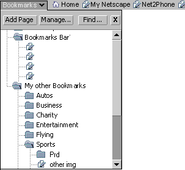
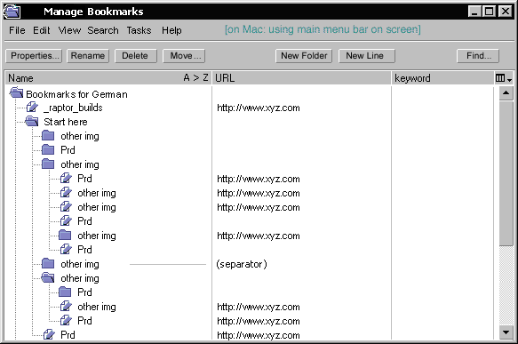
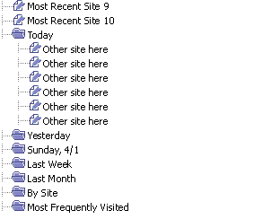

| Seamonkey Navigator |
UI
Specification
|
|
Bookmarks and History send feedback to the component specific newsgroup |
Last
Modification:
|
| Author:
German W. Bauer Initial Creation Date: 01 February 2000 |
Status: updated proposal |
|
Quick Index:
|
Feature Team
|
Summary/Overview
The bookmarks and history UI will enable the user to use, browse and organize hierarchical lists of their data. Initially the UI described here will be deployed for bookmarks and history only.
UI Goals
Provide simple integration of History and Bookmarks
Provide streamlined approach to Navigation, grouping related elements close to each other
Allow simple management of bookmarks inline
Allow easy to use retrieval of previously visted sites
Target Audience
The target user for this feature are Communicator Seamonkey users ,specifically end-users that are trying to access and organze stored information about websites quickly.
User Tasks | Bookmarks
| Basic Tasks | Intermediate Tasks | Advanced Tasks |
| Add current page | Modify item | Change what property colums are visible |
| Find stored Bookmark | Sort Bookmark list by properties | Edit advanced properties |
| Go to page of stored BM | Add new Folder | |
| Search Bookmarks | Add new Separator | |
| Using Folders | ||
| Transfer viaClipboard | ||
| Import/Export | ||
User Tasks | Session History
| Basic Tasks | Intermediate Tasks | Advanced Tasks |
| Move back and forward within immediate history | Remove stored history |
User Tasks | Global History
| Basic Tasks | Intermediate Tasks | Advanced Tasks |
| View by Date last visited(Day) | View By Site | Change what property colums are visible in table view |
| Find stored History item | View By Frequency | |
| View By Order visited | ||
| Removed stored History | ||
| Convert history items to bookmarks |
Design Details
Access Points to Bookmarks and History
Top-level access points to Bookmarks:
- a Bookmarks Bar with a QuickFile button
- a Bookmarks Menu
- a separate window to manage bookmarks
Top-level access points to History of visited sites:
- Back and Forward buttons with popout menus for random access to immediate session history trail
- A Go menu with access to the immediate session history as well as global persistent history
- and a separate window to manage perviously visited sites
Both History and Bookmarks may also be available as simplified (1-column only) view in a sidebar pane
Bookmarks Bar
The bookmarks bar will Navigator specific and user customized items for quick access
Goals for our end users
This is the location in Navigator
Seamonkey that we will exclusively reserved for and maintained by the end-user.
Promote convenient access to bookmarks, frequently used folders and links, as
well as to 'home' and 'My Netscape' .
| Basic Tasks | Intermediate Tasks | Advanced Tasks |
| Access to Homepage | Place Bookmarks for quick access | Create folders |
| Remove items from bar | Customize default items | |
| View items that did not fit on bar |
Default bookmarks bar for Navigator
Overview of component groups in the bookmarks bar
|
|
|
|
||
| Component |
|
|
|
Expand Button |
| Purpose | These are the default access points for sites related to the internet. Even though they are slightly different than items in the other sections (core, in there by default), all of these feature some kind of personalization/customization aspect | Let users 'park' links here for quick and frequent access |
|
|
| Presentation |
|
|
|
Design/Icon TBD |
| Can be removed by end user? |
|
|
|
no |
Bookmarks Quickfile Button on Bookmarks Bar

Location: First position on the bookmarks toolbar, to the right of "Home" and "My Netscape"
Contents:
- Button row on top:
- Add current page (tooltip [Add "Current Page Title or URL"]: adds the page loaded in the current Navigator window
- Find...(tooltip: [Search stored Bookmarks]): brings up the bookmark find dialog (similar to mail find dialog)
- Manage..(tooltip: [Bring up Manage Bookmarks... Window]: launches the more extensive "Manage Bookmarks window
- Close(tooltip: [Close Bookmarks])
- Bookmarks starting with the Personal Toolbar node (TBD: should we take this out to avoid confusion?), native folders and live should be shown differently
Look: Button should have popup menu appearance and be made to 'look somewhat special' compared to other items on this toolbarList similar to other list views with a simple non-collapsable button area on top
Behavior: a hybrid between a window and a menu, the popped-up bookmarks list stays open, until a bookmark is 'launched' through double clicking.
- spring-open when bookmark is being dragged on top of bookmark button
- enable drag and drop into folder
- single click to select an item
- 2nd single click on selected item results in inline editing of the item's name on win32, on mac it's timeout based (hovering over item)
- double click to launch the item (and dismiss the pop-up)
- allowing marquee/mult. selection
- full drag in/out/around capabilities.
right click (on win32) or timeout/ctrl click on Mac OS 8 will invoke contextual menu (details see below), showing items for list only , or for selected item and list- show just name column and allow sorting and unsorting (user order) only on that column via contextual menu
- While open, the corresponding folder button on the toolbar will display the mouse down look (ie. open folder, hilite around button area etc). The top left origin of the popped-up list should be placed flush left with the button when space is available, and also vertically such as to give the impression of being attached to the location of the popup menu. In this presentaion the list will not show it's own titlebar since the list name is already featured in the folder on the toolbar.
Separate "Manage Bookmarks" Window

Presentation:
- This window is non-modal and will have it's own menu (File, Edit, View, Search, Tasks, Help)
- Default: show 3 columns when opening (Title Name, URL, Custom Keyword-TBD) and additional column customizer button like in other list views
- We need more descriptive feedback to indicate the sort state as well as the clickable column header areas like this: (in addition to the Mac's column hiliting

Menu:
|
|
|
||||||||||||||||||||||||||||||||||||||||||||||||||||||||||||||||||||||||||||||||||||||||||||||||||||||||||||||||||||||||||||||||||||||||||||||||||||||||
|
|
|
Immediate Session History (Back and Forward)
similar to Mozilla 0.6/Netscape 6 where this are split buttons that allow 1-step back and forward by clicking the main button, and have a flyout menu to allow to go up to 10 items back or forth in the immediate session history for that window.
Go Menu
The Go menu shows the same entries as the global history window (when sorted by most recently visisted):
- most recent 10 items
- submenu named "Today"
- submenu named "Yesterday"
- submenu name "[weekday, date]" (last 3 or so until week border)
- submenu name "Last week" (containing folders named [weekday,day]")
- submenu name "Last month" (containing folder named [Week of ] which contain folders named [weekday,day]")
- TBD: how far should we go back?
Full View Global History Window
Groupings in history allow users quick "view by" access without requiring managing
table and sort headers.
view items by date/time visited (default and opened by default), items to show:
- most recent 10 items
- folder named "Today"
- folder named "Yesterday"
- folder name "[weekday, date]" (last 3 or so until week border)
- folder name "Last week" (containing folders named [weekday,day]")
- folder name "Last month" (containing folder named [Week of ] which contain folders named [weekday,day]")
- TBD: how far should we go back?
view items by site, containing folders like [www.mozilla.org],[www.netscape.com],...etc.
view items by frequency of visit (this will be shown not in the history folder, but in bookmarks instead based on usability feedback)
(view items by subject (blue skye idea, determine by doing reverse lookup of dmoz directory))

Menu for Full View History Window
|
|
|
||||||||||||||||||||||||||||||||||||||||||||||||||||||||||||||||||||||||||||||||||||||||||||||||||||||||||||||||||||||||||||
|
|
|
Dragging & Selection Bahviors
Dragging
TBDSelecting items/ Inline editing

Context Menus &
Preferences
Bookmarks Menu in Navigator
TBD
Context Menus for Bookmarks in either 'Manage Bookmarks Window', or Bookmarks Quickfile Menu (and sidebar panel)
| Bookmark Folder | Bookmark Item | Bookmark Seperator | Anywhere else in Bookmarks List | ||||||||||||||||||||||||||||||||||||||||||||
|
|
|
|
Context Menus for Previously Visited Sites (History)
| History Grouping Folder | Recently Visited Item | Seperator | Anywhere else in History List | |||||||||||||||||||||||||
|
|
|
|
this is old will be updated shortly:
Preferences
TBD
The will be a way to clear the history
cache from prefs (similar to 6.0)
Error Messages and Dialogs
TBD